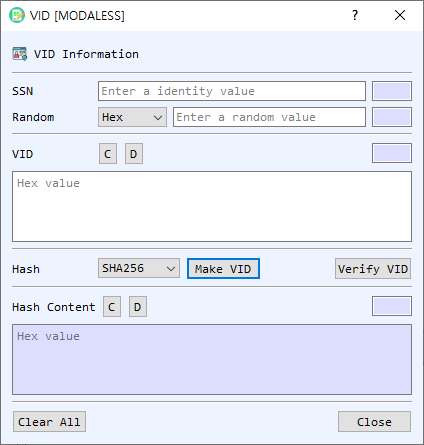

VID Dialog Guide
The VID dialog creates and verifies a VID (Virtual ID) using an identity value, a random value, and a selected hash algorithm. It also displays the associated hash content for inspection.

Figure 1. VID dialog. Enter the same identity and random value used to create a VID, then generate or verify the value.
Screen Areas
- SSN — Enter the identity value used in the VID calculation. The adjacent field displays its length.
- Random — Enter the random value and select its representation (Hex, String, or Base64). The adjacent field displays the decoded length.
- VID — Displays the VID as hexadecimal. D decodes the value in BerEditor's main window; C clears it. The adjacent field shows the length.
- Hash — Select the hash algorithm used when creating a VID. The initial value follows BerEditor's configured default hash.
- Make VID / Verify VID — Generate a VID and its hash content, or verify the entered VID against the supplied identity and random value.
- Hash Content — Displays the hexadecimal hash content produced during generation or recovered during successful verification. D decodes it in BerEditor; C clears it. The adjacent field shows the length.
- Clear All / Close — Clear the SSN, random value, VID, and hash content, or close the dialog.
Create a VID
- Enter the identity value in SSN.
- Enter the random value and select its representation.
- Choose the Hash algorithm.
- Select Make VID. The generated VID and corresponding Hash Content appear in their fields.
Verify a VID
- Enter the same identity value and random value used to create the VID. Select the correct random-value representation.
- Enter the VID in hexadecimal in the VID field.
- Select Verify VID. A successful verification displays the recovered Hash Content and reports the result in BerEditor's message/log area.
Notes
- Verification requires the original identity value and random value, with the same random-value encoding used when the VID was created.
- The VID field and Hash Content field use hexadecimal values. Use their D buttons to inspect the encoded data in BerEditor.
- The dialog records the identity value, random value, hash, hash content, and VID in BerEditor's log during generation. Consider this when handling identifying or sensitive input.